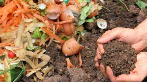

Sustentabilidade
Promover práticas agrícolas sustentáveis que respeitem o meio ambiente e preservem os recursos naturais para futuras gerações.
O Agrinho 2026 é um programa de educação ambiental focado em sustentabilidade agrícola e desenvolvimento rural. Promovemos práticas inovadoras e ecologicamente responsáveis no setor agrícola.
Nosso objetivo é conectar escolas, comunidades e produtores rurais em torno de princípios de sustentabilidade, educação ambiental e preservação do meio ambiente.

Créditos do vídeo: TV Brasil Central - YouTube
Assista ao vídeo para conhecer o propósito do Agrinho, como o programa incentiva a agricultura sustentável.
A agricultura sustentável é uma abordagem que busca equilibrar a produção de alimentos com a preservação dos recursos naturais e a proteção do meio ambiente.
O Agrinho promove práticas agrícolas que respeitam a biodiversidade, conservam o solo e a água, e reduzem o uso de agrotóxicos, contribuindo para um futuro mais sustentável.
Ao adotar a agricultura sustentável, podemos garantir a segurança alimentar, proteger os ecossistemas e melhorar a qualidade de vida das comunidades rurais.
Junte-se a nós nessa jornada de aprendizado e transformação para um mundo mais verde e saudável!
Promover práticas agrícolas sustentáveis que respeitem o meio ambiente e preservem os recursos naturais para futuras gerações.
Oferecer recursos e conhecimento sobre agricultura moderna, ecologia e sustentabilidade para escolas e comunidades.
Conectar produtores rurais, educadores e alunos em uma rede colaborativa de aprendizado e desenvolvimento.
Estimular a adoção de tecnologias verdes e práticas inovadoras no campo para maior produtividade e eficiência.
Palestras e oficinas sobre técnicas de agricultura sustentável, compostagem e produção orgânica.
Implantação e manutenção de hortas em escolas e comunidades para o aprendizado prático e produção local.
Iniciativas de reflorestamento, preservação de nascentes e proteção da biodiversidade local.
Eventos anuais para divulgação de projetos, troca de experiências e premiação de iniciativas destacadas.

Criando espaços de cultivo nas escolas para ensinar práticas de plantio e alimentação saudável.

Transformando resíduos em fertilizante natural para enriquecer o solo das hortas comunitárias.

Recuperando áreas degradadas com mudas nativas e preservando a biodiversidade local.

Promovendo cultivo sem agrotóxicos e valorizando práticas responsáveis no campo.

Integrando várias espécies de plantas para melhorar a saúde do solo e proteger o ambiente.

Trabalhando com alunos para criar consciência ambiental e estimular atitudes sustentáveis.
Escolas Participantes
Alunos Envolvidos
Hortas Criadas
Árvores Plantadas